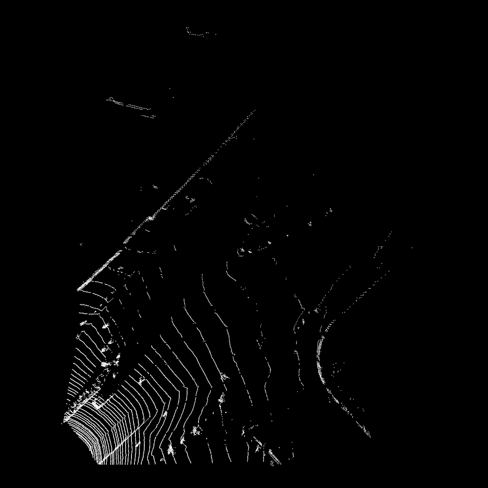
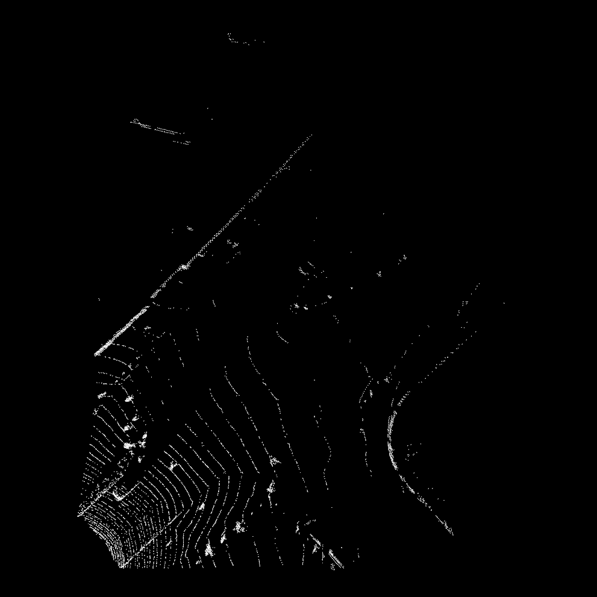
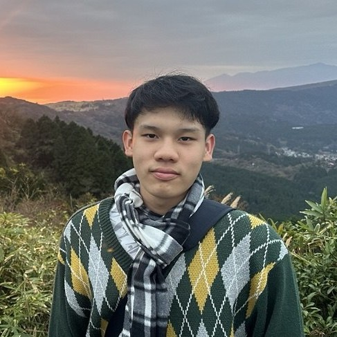
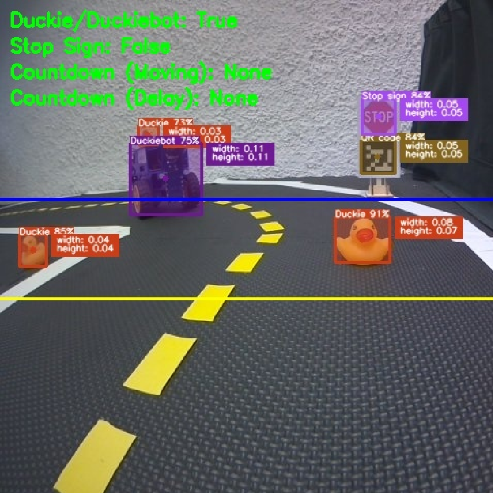
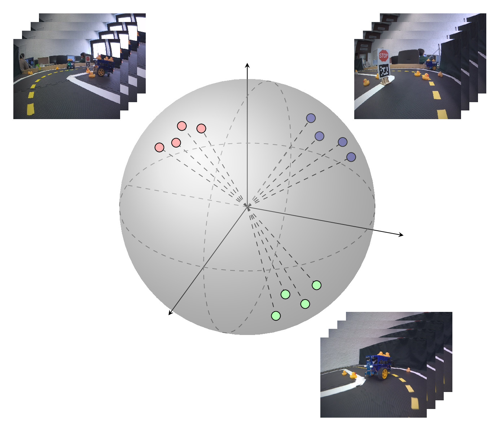
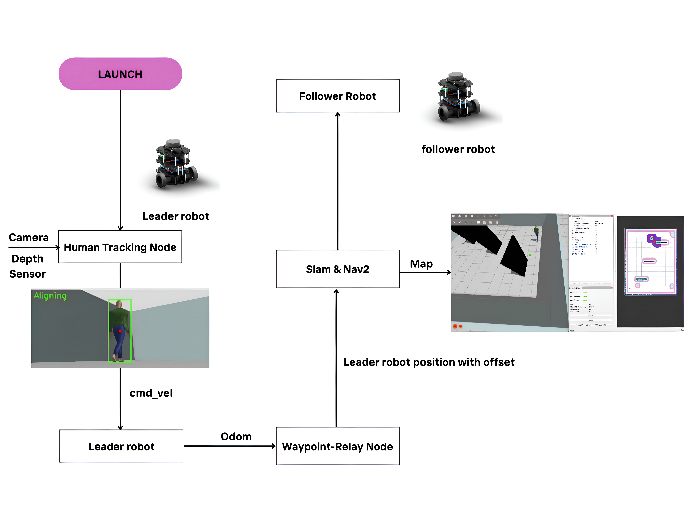

PREPRINT
NV3D: Leveraging Spatial Shape Through Normal Vector-based 3D Object Detection
arXiv, 2025
MSc Student at CTU in Prague · Researcher at IMPACT, CIIRC
chaowkri [at] cvut [dot] cz
Krittin is an MSc student in Open Informatics at the Czech Technical University in Prague. He also works as a researcher with the Intelligent Machine Perception (IMPACT) group at the Czech Institute of Informatics, Robotics and Cybernetics, with a focus on robot simulation.
Previously, he completed his B.Eng. in Electrical Engineering at Sirindhorn International Institute of Technology, Thammasat University, and spent a semester at the Technical University of Munich, where he conducted research on multi-object detection for autonomous vehicles.



arXiv, 2025


Bachelor's Thesis, Technical University of Munich, 2025
A comprehensive study of object detection in Duckietown using YOLO, benchmarking latency, throughput, and hardware utilization across YOLO v8–v12 on an NVIDIA Jetson Nano 4GB.

Senior Project, SIIT, 2025
Multi-robot formation using Yahboom robots and ROS 2, simulated in Gazebo, with a vision-based tracking pipeline combining YOLO detection, DeepSORT tracking, and face recognition for human following.
Teaching assistant for four laboratory courses and grader in five courses, including a current master's-level course.